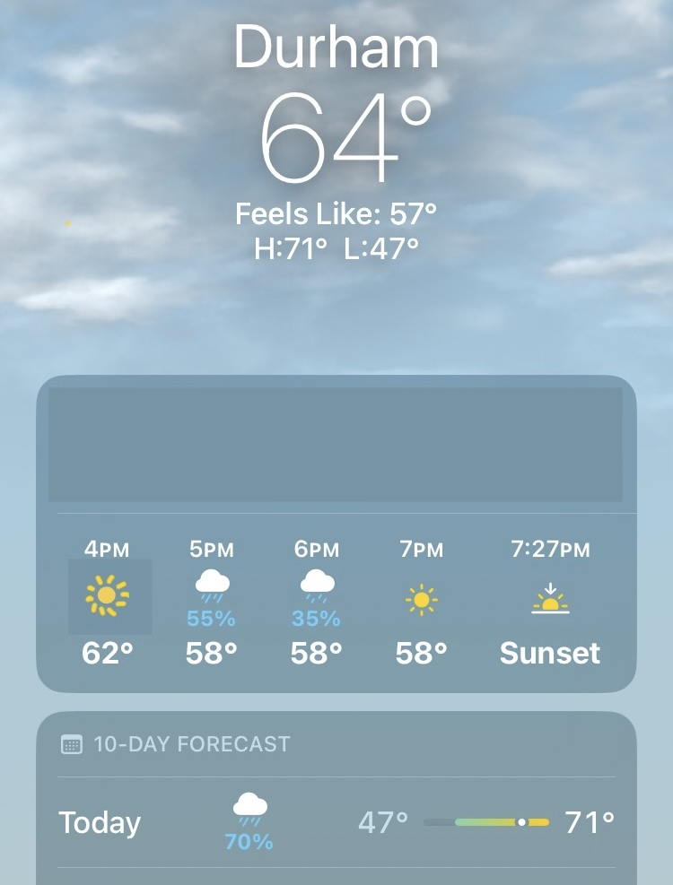
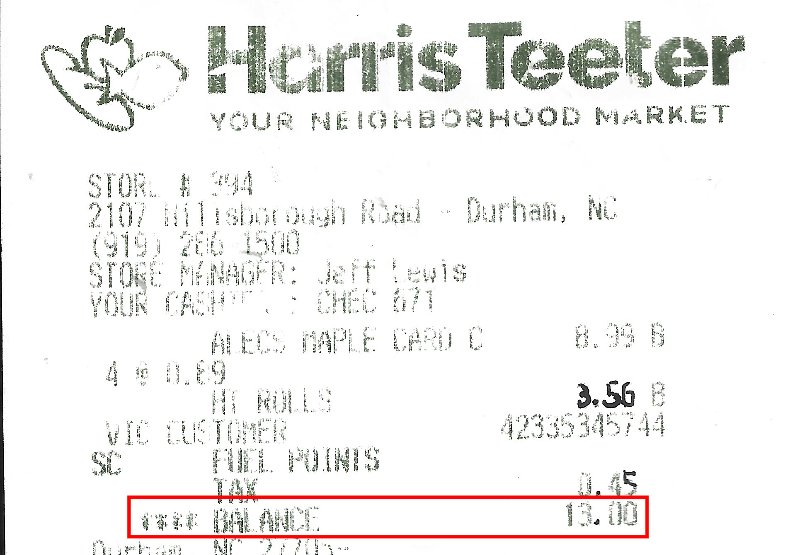

Problem Set 1
Due Friday September 12 at 5PM
Before you start
Some of these problems ask you to prove new probability rules using a small set of raw materials: set theory, the axioms, and the basic rules we saw in lecture. The purpose of these problems is to demonstrate that you understand every step in the reasoning, even if it seems trivial and obvious. So, don’t leave anything out! Every step of the argument should be explicit, and you should clearly indicate which axioms/results you are invoking when you move from point A to point B. After you’ve paid your dues, we’ll give you some latitude to hand wave and yada-yada your way through certain basic arguments. But not yet.
Problem 0
Recommend some music for us to listen to while we grade this.
Problem 1
Persi Diaconis is a famous researcher in probability and statistics. He has a cute line of research where he probes the randomness that we take for granted in simple things like coin tossing, dice, and playing cards. In the interview above he discusses coin tossing, and says both “coin tossing is as close to a random phenomenon as I know” and “coin tossing is a deterministic process. What’s random about it?” Wut?
Watch the interview, and report back with a brief summary of Diaconis’ explanation of what makes a coin toss random. Do you agree or disagree?
Problem 2
Take \(\mathbb{R}\) to be your reference set, and consider these subsets:
\[ \begin{align*} A&=[1,\,5]\\ B&=\{x\in\mathbb{R}\,:\,|x|>2\}\\ C&=(-\infty,\,0]\\ I_n&=\left[0,\,\frac{1}{n}\right] \end{align*} \]
Express each of the following in as simplified and concise a form as possible:
- \(A^c\)
- \(A \cup B\)
- \(A\cap C\)
- \(A\cap C^c\)
- \(B \cap C^c\)
- \(A^c \cap B^c \cap C^c\)
- \((A \cup B) \cap C\)
- \(\bigcap_{n=1}^\infty I_n\)
- \(\bigcup_{n=1}^\infty I_n\)
Problem 3
“Prove” each set identity with a picture:
- Distributive property: \(A\cup(B\cap C)=(A\cup B)\cap(A\cup C)\);
- De Morgan: \((A\cap B)^{c}=A^{c}\cup B^{c}\);
Problem 4
A simplified model of the human blood-type system has four types: A, B, AB, and O. Suppose that, for a randomly chosen person, the probability of type O blood is 0.5, of type A blood is 0.36, and of type B blood is 0.11. There are two antigens, anti-A and anti-B, that react with a person’s blood in different ways depending on the type. Anti-A reacts with blood types A and AB but not with B and O. Anti-B reacts with blood types B and AB, but not with A and O.
- Let \(\mathcal{A}\) be the event that a person’s blood reacts with anti-A, and let \(\mathcal{B}\) be the event that their blood reacts with anti-B. Classify the person’s blood type using the events \(\mathcal{A}\) and \(\mathcal{B}\) and their complements;
- What is the probability that both antigens will react with a random person’s blood?
- What is the probability that each antigen will react with a random person’s blood?
Problem 5
One day last semester I looked down at my phone and saw this screen:

Interpret the three probabilities and explain how they fit together.
Problem 6
Let \(A\) and \(B\) be events in a sample space \(S\). Let \(C\) be the set of outcomes that are in either \(A\) or \(B\), but not both.
Draw a well-labeled picture of \(S\), \(A\), \(B\), and \(C\).
Write down a formula for \(C\) in terms of \(A\) and \(B\) using any of the basic operations: union (\(\cup\)), intersection (\(\cap\)), complement (\(^c\)).
Use set theory and the probability axioms to show that
\[ P(C)=P(A)+P(B)-2P(A\cap B). \]
- Explain this result conceptually (with words and pictures).
Problem 7
Let \(S\) be a sample space, and consider events \(A,\, B,\, C\subseteq S\). Recall that the law of inclusion/exclusion says that
\[ P(A\cup B)=P(A)+P(B)-P(A\cap B). \]
How should this be extended to unions of three events? \[ P(A\cup B\cup C)=P(A)+P(B)+P(C) +\,...{???} \] Explain your conjecture with words and pictures.
Use set theory and the probabiity axioms to prove your conjecture in the previous part.
Problem 8
Suppose we have the sample space \(S=\mathbb{N}=\{0,\,1,\,2,\,...\}\) and a probability measure \(P\) that assigns the following individual probabilities to the singleton sets:
\[ P(\{i\})=c\frac{4^i}{i!},\quad i\in\mathbb{N}. \]
- In order for \(P\) to satisfy the axiom of total measure one, what must be the value of the constant \(c>0\).
- Which outcome(s) in the sample space are most likely (ie have the largest individual probability of occurring)? Furthermore, how do you know for a fact that you’ve identified all of them? The sample space is infinite, so presumably you cannot literally check every outcome.
- What is the probability of the even numbers?
I could not care less about the answers to these questions. It’s all about the reasoning, and showing that you understand how the ideas fit together. To earn full credit, make sure you carefully justify everything by making appropriate reference to the rules and axioms.
Problem 9
A few months ago I went to Harris Teeter to get some junk food, and when I looked at my receipt, I saw this:

I thought, “Strange. What are the odds the total would be a whole number?” Well, let’s find out!
- Imagine you randomly purchase two items that each cost less than $10, and assume all prices are equally likely. The prices of the two items are quoted to two decimal places. What is the probability that the two prices add up to a whole number total?
- Now let’s add a wrinkle. Imagine sales tax is 5%. This is calculated, rounded up to the nearest cent, and then added to your bill. What is the probability that the cost of the two items plus the rounded sales tax adds up to a whole number?
The answer to part b is roughly 0.01, but showing this is tricky. Give it a shot!
Problem 10
Seven balls are randomly withdrawn from an urn that contains 12 red, 16 blue, and 18 green balls. Find the probability that
- 3 red, 2 blue, and 2 green balls are withdrawn;
- at least 2 red balls are withdrawn;
- all withdrawn balls are the same color;
- either exactly 3 red balls or exactly 3 blue balls are withdrawn.
Submission
You are free to compose your solutions for this problem set however you wish (scan or photograph written work, handwriting capture on a tablet device, LaTeX, Quarto, whatever) as long as the final product is a single PDF file. You must upload this to Gradescope and mark the pages associated with each problem.
Do not forget to include the following:
- For each problem, please acknowledge your collaborators;
- If a problem required you to code something, please include both the code and the output. “Including the code” can be as crude as a screenshot, but you might also use Quarto to get a nice lil’ pdf that you can merge with the rest of your submission.